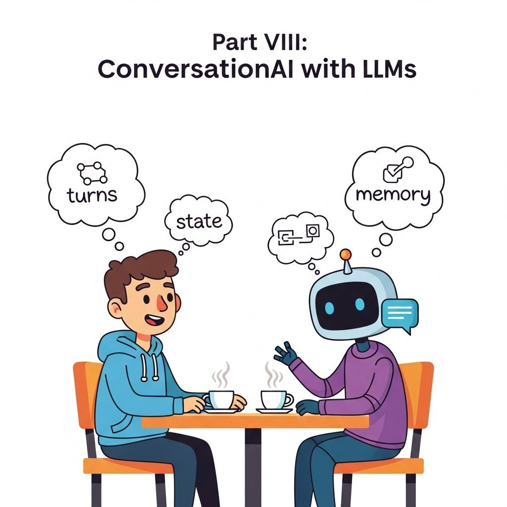

Part Overview
Dialogue architecture, memory, multi-turn flows, voice and realtime multimodal assistants.
Big Picture
Dialogue architecture, memory, multi-turn flows, voice and realtime multimodal assistants.
Chapters
What's Next?
This part begins with Chapter 37: Building Conversational AI Systems. Each chapter builds on the previous one, so we recommend reading Part VIII in order.